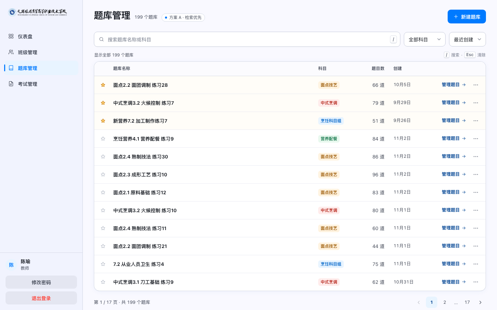
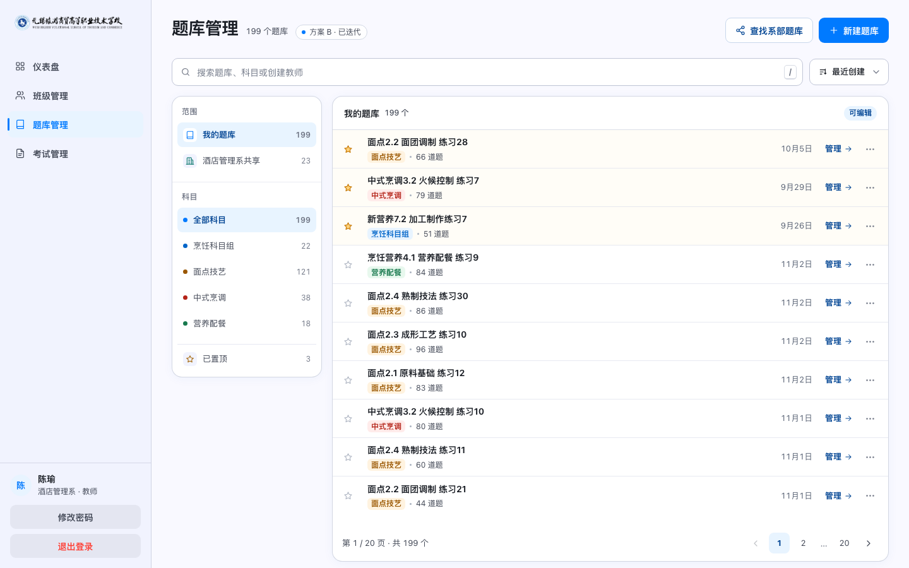
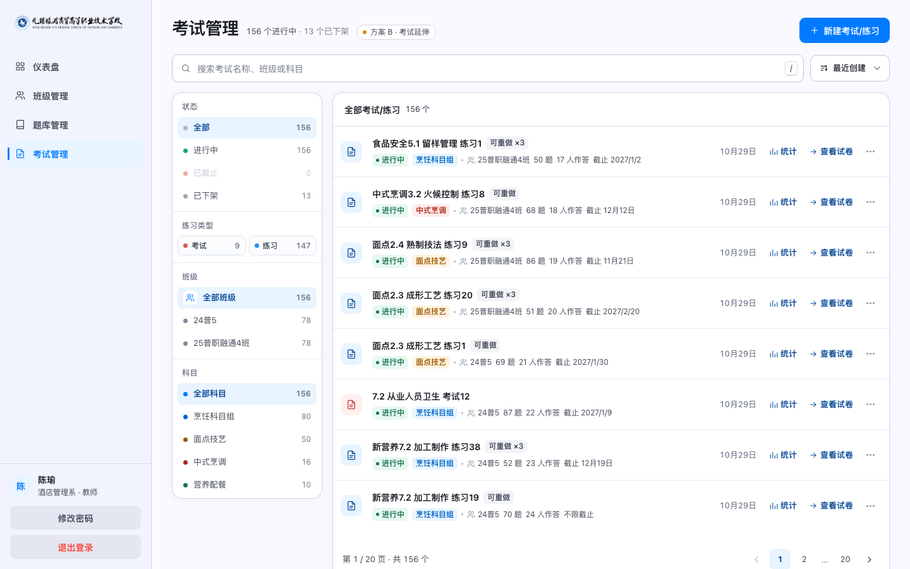
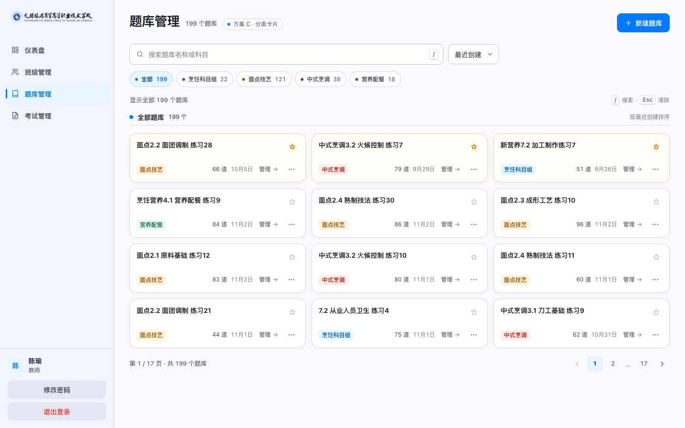

B课程导航 · 已迭代
先选课程，再找题库
科目导航与“我的题库 / 系部共享”分区并存；支持按教师搜索共享题库、自定义科目和移动端抽屉导航。
已反馈迭代：共享、下拉框、移动端待讨论：共享后端的引用与复制语义
打开题库管理
题库页使用 199 条真实规模数据；方案 B 同时延伸到 156 条进行中和 13 条已下架的考试记录。


科目导航与“我的题库 / 系部共享”分区并存；支持按教师搜索共享题库、自定义科目和移动端抽屉导航。


科目标签与搜索先缩小范围，再用紧凑卡片浏览。对现有界面改动最小，同时把 199 个结果切成一页 12 个。